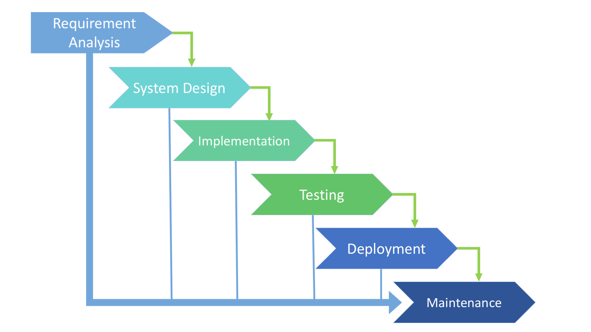

Waterfall ehk kosemudel
-
Etapp - Nõuete määratlemine:
Selles etapis dokumenteeritakse arendatava toote/tarkvara/süsteemi nõuded,
käitumine, sihtriistvara jms. mis on arendatava tarkvara taatlusliku
funktsioneerimise tarbeks vajalikud. Vahest jaotatakse see etapp ka omakorda
kaheks - Süsteemianalüüs ja Nõuete analüüs.
-
Etapp - Süsteemi ja tarkvara kavandamine:
Teises etapis kavandatakse arendusel olev süsteem ja tarkvara keskendudes
nende põhilistele omadustele. Põhiomadusteks võivad olla: Andmestruktuurid,
tarkvara arhitektuur, liidesed, liideste omadused ning protseduurilised ja
algoritmilised detailid. Kavandamise tulemused dokumenteeritakse mille abil
hinnatakse teostuse käigus projekti kvaliteet.
-
Etapp - Teostus ning moodulite testimine:
Eelnevalt dokumenteeritud kavandi järgi toimub kolmandas etapis tarkvara/süsteemi
arendus. Arendustöö käigus arendatakse programm moodulhaaval või moodulite
kogumikuna. Peale programmeerimist teostatakse moodulite ja kogumite testimised.
Olenevalt eelnevalt dokumenteeritud kavandi detailsusest tuleneb selles etapis
projekti arenduslihtsus. Mida rohkem detaile on kavandatud, seda lihtsam on arendustöö.
-
Etapp - Integratsioon ja süsteemi testimine:
Toimub kogu tarkvarasüsteemi testimine. Peale testimist tarnitakse toode kliendile
või kasutajate sihtrühmale. Testitakse sellest vaatepunktist kas süsteem teeb seda mis
eelnevalt dokumenteeritud ning testitakse ka seda et süsteemis esinevad detailid on
loogilised.
-
Etapp - Kasutamine ja hooldus:
Kõige pikem tarkvara elutsüklis olev etapp. Siin toimub vigade parandus,
funktsionaalsuse muutmine, (kas siis kliendi, turu, keskkonna, või sihtrühma
sisendi/vajadusena). Arendustöö teostamiseks korratakse kõiki eelmisi etappe,
kuid siis ainult süsteemi muutmise eesmärgil, mitte enam nullist millegi uue
arendamise jaoks.
Iga etapi tulemusena tekib dokument (kas siis üks või mitu)
mis kirjeldab etapis saavutatud tulemit. Kõik dokumendid kinnitatakse.
Järgmine etapp ei tohi olla samaaegselt töös kui eelmine pole lõpetatud
Kuigi mingi ülekate siiski on, ning infot on võimalik edastada ühest etapist edasi teise.

| Positiivsed küljed |
Negatiivsed küljed |
| Paindlikkus |
Ettearvamatu |
| Kiirus; kiirem turulejõudmine |
Keskendumine siin ja praegu |
| Vähendatud risk |
Tugineb koostööle |
allikad:
EUCIP